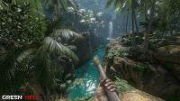
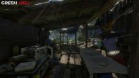

THE SPY
GAMES
GREEN HELL – V2.2.0 BUILD 31580 / V2.2.1 BUILD 31671 :-
Genres/Tags:
Action, Open world, Survival,
First-person, 3D
Company: Creepy Jar
Languages: RUS/ENG/MULTI19
Original Size: 5.4 GB
Repack Size: 4.8 GB
SCREEN SHOTS:-
 REPACKS FEATURES
- Based on Green_Hell_The_Spirits_of_Amazonia_Part_3-FLT ISO release: flt
- Use “Patch.bat” in the game root to update it from original ISO
- 100% Lossless & MD5 Perfect: all files are identical to originals after installation
- NOTHING ripped, NOTHING re-encoded
- Slightly smaller archive size (compressed from 5.4 to 4.8 GB)
- Installation takes 10-15 minutes
- HDD space after installation: 7.5 GB
- Language can be changed in game settings
- At least 2 GB of free RAM (inc. virtual) required for installing this repack
- minimum intel i3 3rd gen porcessor
- minimum gt 1030 2b vram gpu
- in amd minimum rx530 2bg vram gpu